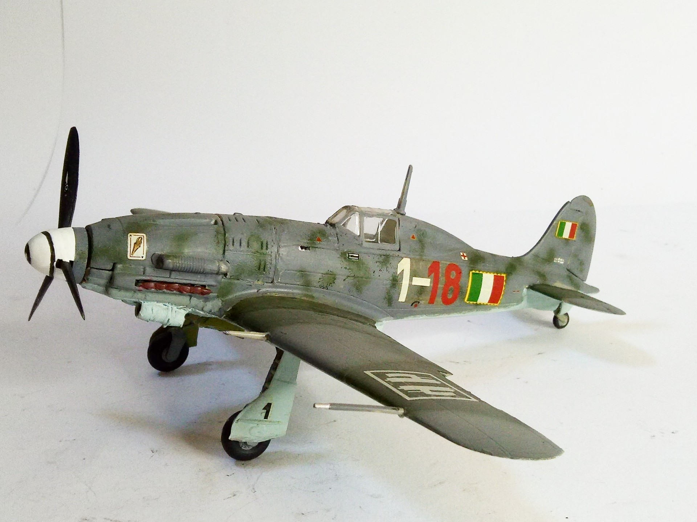

Aerei · scale model archive
Macchi MC 205 Veltro
Macchi MC 205 Veltro — Kit: Tauromodel, Scale: 1/48. 1 Squadriglia 1 Gruppo Caccia Terrestri MM92219 Magg. Adriano Visconti #1/48 #Tauromodel

Photo gallery
English description
1 Squadriglia 1 Gruppo Caccia Terrestri MM92219 Magg. Adriano Visconti
#1/48 #Tauromodel
Descrizione italiana
1 Squadriglia 1 Gruppo Caccia Terrestri MM92219 Magg. Adriano Visconti.